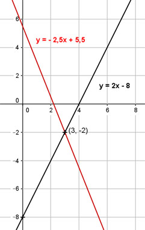

Lineare Funktionen Aufgabe 38 Die Gerade A hat eine Steigung von 2, die Gerade B eine von -2,5. Die beiden Geraden schneiden sich im Punkt (3|-2). Wie lauten die Funktionsgleichungen der beiden Geraden? Gerade A: y = m * x + b m = 2 P(3|-2) Eingesetzt: -2 = 2 * 3 + b -2 = 6 + b |-6 b = -8 y = 2x - 8 Gerade B: y = m * x + b m = -2,5 P(3|-2) Eingesetzt: -2 = -2,5 * 3 + b -2 = -7,5 + b |+7,5 b = 5,5 y = - 2,5x + 5,5 